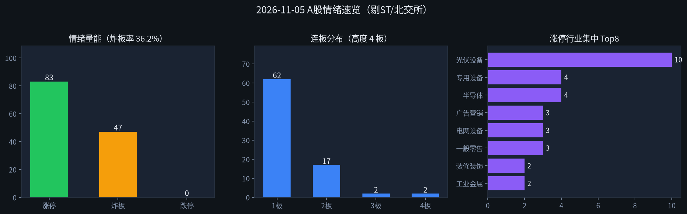

交易日 2026-11-05（周四） · 目标交易日 2026-11-06（周五） · 退潮·光伏脉冲
情绪：退潮 新脉冲：光伏设备 涨停 83 · 炸板率 36.2%| 票 | 昨动作 | 今收盘涨跌幅 | 判定 |
|---|---|---|---|
| 002371 北方华创 | 开多（条件） | +4.76% | 部分对 |
| 002156 通富微电 | 开多备选 | +6.90% | 对 |
| 002827 高争民爆 | 只观察/不加 | −1.71% | 对 |
| 002992 宝明科技 | 只观察 | −5.69% | 对 |
| 002428 云南锗业 | 不加 | +4.80% | 部分对 |
| 600584 长电科技 | 只观察 | +3.65% | 部分对 |
一句话：主线选半导体+回避高度/跟风 对；通富条件单达标，华创「平～低开」措辞偏严致灰区。改进（未回测）：高开 0～2%/2～3% 分层；回踩单止损改成本−3%～−5%或分时低点，不用开盘价。
涨停 83（昨116↓）、炸板率 36.2%（昨22.1%↑）、晋级率仅 18.1%；昨半导体中军北方华创未晋级、通富微电 炸板收+6.9%，主线辨识下降。虽跌停 0、连板高度仍到 4板，但亏钱从高度（高争收−1.7%）扩到昨主线封板失败——定性 退潮，不是冰点空仓末日，也绝非可接力的启动/主升。仓位默认空或极轻，禁追高板与杂毛连板。
| 指标 | 数值 | 备注 |
|---|---|---|
| 涨停家数 | 83 | 已剔 ST / 北交所；东财涨停池 raw84→clean83 |
| 跌停家数 | 0 | 东财跌停池当日 pool=[]；乐咕活跃度同步 0 |
| 炸板家数 | 47 | 炸板池 clean |
| 炸板率 | 36.2% | 炸板/(涨停+炸板)=47/130 |
| 连板高度 | 4板 | 闽发铝业、浙文影业 |
| 连板结构 | 4板 2 / 3板 2 / 2板 17 / 1板 62 | 量仍在低位；高度有尖但晋级弱 |
| 昨日涨停数 | 116 | previous 池 clean |
| 晋级数 / 晋级率 | 21 / 18.1% | 昨涨停今仍涨停，晋级偏弱 |
| 高度/主线亏钱样本 | 高争民爆约−1.7%；宝明约−5.7%；通富炸板未回封 | |
| 两市成交额 | 约 21180亿（新浪指数成交额：上证≈9797 + 深成≈11382） | |
| 涨停池成交额 | 约 501亿（仅涨停标的） | |
读表一句话：跌停虽为0，但涨停收缩 + 炸板率跳升 + 晋级不足两成 → 情绪从「修复」滑向 退潮；明天只允许极严条件的新脉冲首板观察，禁止高度接力。

附图：涨停 / 炸板 / 跌停柱状 + 连板分布 + 行业集中（emotion_20261105.png）
4板：闽发铝业（002578）、浙文影业（601599）—— 早盘封死，退潮期 不加。
3板：永臻股份、鲁阳节能（炸4次、末封晚）—— 不加。
昨3板高争民爆今日开板收绿，继续验证高度亏钱。
贵金属涨停仅零星（盛达资源2板但炸6次）；云南锗业今日收 +4.80% 未涨停。辅线热度下降，不做第二仓。
主线判断依据 = 涨停池行业集中度 + 封板时间/封单/是否回封；概念涨幅榜未作为主论据。
情绪 = 退潮 → 默认 空仓或专项 ≤10%，同时持仓建议 ≤1 只；进场只看竞价强弱、板块是否还在、回封/承接、量能；不追一字、不接力 3板及以上、不博弈炸板回封杂毛。高开分层（未回测）：低开0～3%优先回踩昨收；高开0～2%确认板块不翻绿可接；高开2～3%必须回踩昨收或开盘价下1%内；≥3%/一字不追。
| 标的 | 002156 通富微电 / 002371 北方华创（仅对已持仓） |
|---|---|
| 动作 | 减仓 / 止盈止损管理（未持仓者 不加新仓） |
| 退出 | ① 早盘冲高（相对成本或昨收 +3%～+5%）减半或清；② 跌破今日分时关键低点或成本 −3%～−5% 清（回踩单不用开盘价，未回测）；③ 竞价低开 ＞5% 且无承接 → 开盘附近减/清。 |
| 目标 | 反抽减仓为主，不博连板。 |
| 仓位 | 合计压到专项 ≤10%，更好 清零观望。 |
| 原因 | 退潮确认：通富已炸板、华创未晋级；盈亏兑现优先于幻想主升。 |
| 角色 | 光伏设备首板 / 新脉冲相对干净样本 |
|---|---|
| 收盘参考 | 2.54（已涨停）；理论次日涨停约 2.79、跌停约 2.29 |
| 进场 | ① 竞价 平开～高开 ≤2%（约≤2.59），且光伏设备竞价不集体翻绿；② 开盘后回踩昨收 2.54 附近或分时VWAP能承接再买；③ 高开 2%～3% 必须回踩昨收/开盘下1%内（未回测）；④ 高开≥3% 或一字不追；⑤ 低开 ＞5% 不参与。 |
| 止损 | 成本 −3%～−5% 或跌破开盘后30分钟内分时低点（先触先走；未回测） |
| 目标 | 冲涨停或 +7% 减半；封不住/炸板不回封则收盘前清 |
| 仓位 | 专项 ≤5% |
| 原因 | 光伏为今日涨停集中第一，该股早封未炸、封资尚可；但板块炸板多，只作退潮期试错探针。 |
| 作废 | 竞价光伏核心股大面；该股高开≥3%/一字；开盘后半小时光伏炸板潮扩散；自身迅速弱于板块无承接。 |
| 动作 | 只观察 / 不加（3板） |
|---|---|
| 收盘参考 | 18.85（早盘封死） |
| 仓位 | 0% |
| 原因 | 退潮期不接力3板高度。竞价打开后直线砸 → 强化全天空仓信号。 |
| 动作 | 不加（4板高度） |
|---|---|
| 仓位 | 0% |
| 原因 | 连板高度杂毛，退潮默认不参与一字/高位接力。 |
| 动作 | 只观察 / 默认不加 |
|---|---|
| 收盘参考 | 31.02（半导体2板，早封、封资约2.80亿，未炸） |
| 仓位 | 0% |
| 原因 | 个股质量尚可，但所属主线辨识下降、中军未能延续 → 退潮期不单独赌残留2板。 |
| 动作 | 不加 |
|---|---|
| 仓位 | 0% |
| 原因 | 半导体2板但分别炸板 6 / 11 次，封板质量差，退潮期典型脏板。 |
20261105；跌停池官方返回空列表（记0，乐咕交叉验证）；个股开高低收来自新浪；两市成交额用沪深指数成交额加总（约21180亿）。未编造。